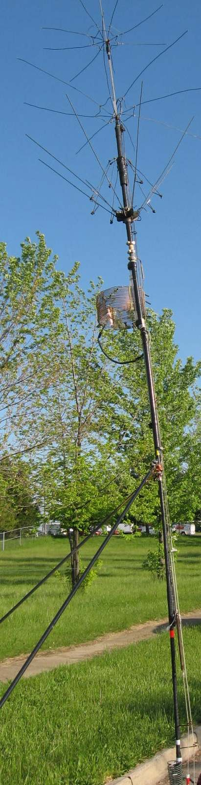
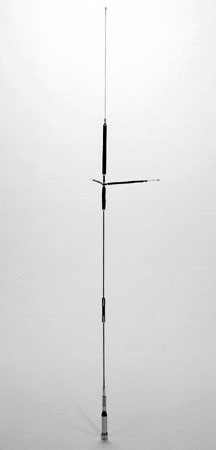
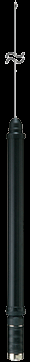
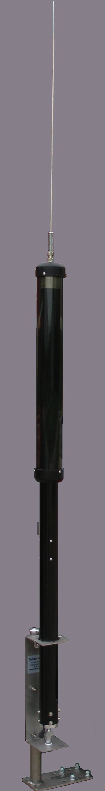
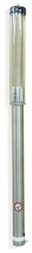
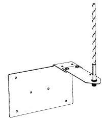
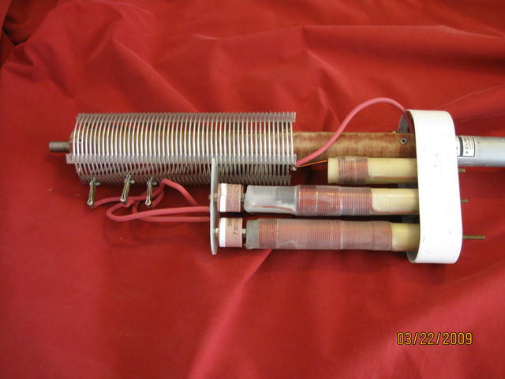
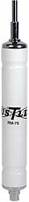

Ford F-Series and Other Aluminum-Body Vehicles
Ford's F-series aluminum-body pickup trucks require special installation practices with respect to galvanic corrosion. Ford has published a bulletin explaining what must be done to prevent galvanic corrosion; the results of failing to follow Ford's guidelines are predictable and not covered under warranty. If in doubt, contact your local Ford dealer for details. Antenna mounting hardware should be aluminum, not steel, and properly mounted as recommended by Ford. Bonding is not required because Ford has already done that for you.
The same basic rules apply when mounting antennas on any aluminum-body vehicle, though each manufacturer's recommendations may differ. When in doubt, contact your dealer's service staff and/or the manufacturer's customer service staff. It should be noted that most antenna manufacturers use steel in their mounting brackets and/or attachment fittings. In some cases, this eliminates using that brand and/or model entirely, or at minimum requires a major change in the mounting hardware and/or location.
Basics
Mobile antennas appear to be a very simple chunk of hardware, when in fact they are a very complex resonant circuit. They come in every imaginable configuration, and almost all of them will allow you to make contacts — even DX ones — if there is sufficient SNR on both ends of the contact. However, their efficiency, overall length, quality, design, sturdiness, ease of mounting, and selling price all vary. Choosing any one or more of these specific attributes is no guarantee you're getting any other one included.

The most important attribute is overall antenna efficiency. All decent HF mobile antennas require some sort of impedance matching to obtain a responsible SWR. When they don't, it just means the resistive losses are high — read that as low efficiency. Overall length is also important in obtaining good efficiency. Radiation resistance (Rr) is a square function of electrical length: a 9-foot long antenna will have twice the Rr of a 6-foot antenna, and twice the efficiency, all else being equal.
Do not get suckered into believing that large diameter coils (>3.5 inches) are better than smaller ones — they're not. Stay away from antennas which have large metal end caps and/or plungers, as they have sub-par efficiency levels. Adding insult, non-permanent mounting (lip, clip, and magnet mounts) adds to the abundance of ground losses, which are already too high in every HF mobile installation.
Two important points bear repeating: Loading coils are considered lumped constants. They are there to cancel the capacitive reactance all short verticals exhibit. They do not add to the electrical length of the antenna, and they do not radiate — contrary to anecdotal belief. And the use of an antenna tuner, built-in or external, to match an HF mobile antenna does nothing more than add loss to an already lossy antenna installation. It does not make the antenna resonant. It does not reduce line losses. It does not reduce the SWR at the antenna. It doesn't make the antenna more efficient.
Esoteric Flaws
Screwdriver antennas dominate the remote-controlled market, and for good reason — there is a lot to be said about changing frequency while under way. However, besides the end cap problem, there are lesser-known issues that need to be mentioned.
At least one model has a weather-sealed coil assembly. In some weather conditions, water condenses inside the coil and mast, collects in the mast, and eventually reaches the motor assembly. The manufacturer denies the problem exists and blames it on power washing.
Some models have relatively short masts (approximately 2 feet). In some installations this places the coil very close to body sheet metal. Accessory masts are available that raise the coil 1 to 2 feet. Even without a lower mast extension, some screwdriver designs place the motor as much as 20 inches above the base of the antenna. Either mounting scheme drastically raises the RF level imposed on the motor leads. Avoid antennas designed this way.
The resonant frequency of a screwdriver antenna is adjusted by changing the length of coil above a contact assembly mounted at the top end of the mast. The unused portion of the coil, stored inside the mast, is typically not grounded. Regardless, the unused portion still has circulating currents flowing through it. Replacing a 6-foot whip with a 3-foot one to enable operation on 10 and 6 meters can cause the coil to self-destruct. For those bands, use a separate antenna.
Too many antenna manufacturers overrate the power handling capabilities of their various models. For example, the Comet UHV-6 is rated at 120 watts SSB. Its manual clearly states the antenna was designed to be lip mounted. If you were to correctly mount one by drilling a hole, a 100-watt transceiver can easily destroy the antenna. This illustrates the trap: the rating assumes the lossy mounting that reduces the power actually reaching the antenna.

Several screwdriver antenna designs incorporate a slip clutch or gap in the all-thread drive screw assembly to avoid motor damage at end of travel. This negates the use of any automatic antenna controller, whether a turns-counter unit or one that measures stall current. Only manual control is possible — a major drawback in a mobile scenario.
Short, Stubby Antennas
Short, stubby, remotely controlled HF mobile antennas have become popular. Their popularity is partly due to their diminutive size (less than 7 feet overall), light weight, apparent ease of mounting, and presumably their spousal approval rating. They're not necessarily less expensive than their stable mates, nor are they anywhere near as efficient.

No matter the brand, all short, stubby antennas have an excessive level of RF flowing on their control leads and coax cables (common mode currents). Choking off common mode current is especially important if you're using an automatic controller. The requisite chokes need to be mounted outside the vehicle and as close to the base of the antenna as possible — very difficult to accomplish with a clip mount.
None of the current batch of short, stubby antennas requires impedance matching because their inherent resistive losses bring their input impedance close to 50 ohms. This means the antennas are not DC grounded, and therefore tend to be noisier than their larger counterparts, especially in rain and dusty conditions.
A short, stubby antenna that shows 1:1 SWR without any matching network is not efficient — it is lossy. The resistive losses in the antenna are so high that they bring the input impedance to near 50 ohms by themselves. The loss mechanism that produces the "flat" SWR is the same one that makes the antenna inefficient. When an antenna doesn't require matching, you need a better antenna and/or mounting scheme.
A Few Notes on Motors
All remotely controlled mobile antennas require some sort of motor to resonate the coil assembly — by definition, a DC-powered, reversible gear motor. Early screwdriver antenna designs utilized a stripped-down Black & Decker rechargeable screwdriver assembly — hence the name. Most manufacturers have since adapted a Pittman gear-motor. It is a wise choice, as Pittman makes rugged, well-designed gear motors. Unfortunately, some cheaper models rely on questionable gear motors.

Some gear motors are designed to operate only in one direction due to torque demands. When operated in their unnatural direction, torque is lessened and rotational speed is greatly reduced. It isn't uncommon for 80-through-10 versus 10-through-80 transition times to vary by a factor of 2 or more. If you QSY frequently, this matters.
At least two antenna manufacturers use a stepper motor design, allowing precise repositioning of the resonant point and decreasing transition time. However, the only controllers available to drive stepper motors are proprietary and expensive, often costing twice as much as the antenna itself.
Under no circumstances should power for any remotely tuned antenna be drawn from the transceiver's accessory port(s).
Standard-Sized Antennas
There really isn't a "standard-sized" HF mobile antenna. On average, they're about 9 to 11 feet in overall length including the whip, with some extending to 13 feet. All remotely tuned antennas contain a gear motor which turns a threaded rod (typically 1/4x20 all-thread) in and out of a nut or threaded boss attached to the bottom of the coil, moving the coil in and out of the mast. Contacts at the top of the mast slide on the outside of the coil, adjusting the resonant point.

Don Johnson, W6AAQ (SK), is credited by many as the father of the screwdriver antenna. He certainly popularized it — and perhaps that's all that counts. Contrary to popular belief, he never patented or copyrighted his design. There are about 75 different manufacturers of screwdriver antennas. Some are copies, some improve on the basic idea, some are marketed better, some try to be something they're not, and some aren't worth the effort.

Most commercial antennas use beryllium copper as a contact material. It wears very well and provides a secure connection when properly implemented. Some manufacturers claim this is dangerous, citing the sloughing off of beryllium particles during normal operation. The facts are, the amount of beryllium sloughed off is almost nil, and so is the danger. The real reason they don't use beryllium finger stock is cost.
Weather sealing is a requisite attribute. Sooner or later, dirt and moisture take their toll. If you operate on the lower bands (80 or 160 meters), the coil is extended nearly its full length, lessening the antenna's mechanical strength and exacerbating the weather sealing problem. Some of the cheaper models have very little coil support when fully exposed — hit a low-hanging limb and the antenna is toast, especially on models with small diameter coils (<2 inches).

On 160 meter coverage: the inductance required to resonate a 160-meter, 8-foot-long mobile antenna is nearly 5 times greater than that required for an 8-foot 80-meter antenna. On average, this more than doubles coil losses, brings input impedance close to (or over) 50 ohms, adds complexity to proper matching, and reduces efficiency to sub-1%. If you own an 80 through 10 meter model and want 160 meter coverage, Scorpion offers an add-on 160 meter coil for their 680 model, adaptable to any screwdriver with appropriate caveats.

One item to keep in mind when buying any HF mobile antenna is the warranty. Read it very carefully, even if it takes reading between the lines. Also read the installation instructions — most can be downloaded before purchase. After reading some of them, you just might want to rethink your purchase.
Spirally Wound Antennas
All spirally-wound antennas are low in efficiency, as their coil Qs hover around 50 or less. A few of the 80-meter models have Qs less than 10. If you want a really lossy antenna, use one of the stubby 3-foot-long versions. Their only attributes are light weight, low wind loading (on some models), and low cost (approximately $30 USD, less the mount). Efficiencies range from 0.3% to 20% on 80 through 10 meters, and they typically don't need matching because the system losses bring the input impedance to near 50 ohms.

Almost all spirally wound antenna masts are hollow, which allows the whip to slide inside the mast and affect the inductance of the loading coil — making them nearly impossible to tune on 80 meters without an antenna analyzer. The proximity of the tail of the whip to the coil further reduces their already poor Q. Most are made with inferior fiberglass that weathers badly, becoming stiff and brittle after just a few months.
Monoband Antennas
Hustler, made by New-Tronics Antenna Corporation, is one of the oldest suppliers of mobile HF antennas in the world. You can even make them multiband by using their "spider" mount (part number VP-1) to hold additional coils.

Hustler promotes their super coils as the ultimate. They're not. The large metal end caps on the super coil make them lossier than the standard ones. Don't spend your money on the larger coils hoping for more efficiency — besides the extra wind loading, their power handling capability isn't any better than the smaller ones, advertising hype notwithstanding.
Hustler antennas have additional drawbacks. One is moisture ingress — water tends to get under the vinyl heat-shrink tubing covering the coil assemblies, detuning the antenna and possibly causing arcing between coil turns. Removing the vinyl sleeve (sometimes suggested) is not a good idea as it allows road grime to build up on the coil windings, causing worse problems. If water ingress happens: remove the whip assembly and place the coil in an oven at about 120°F for 20 minutes. Don't use higher temperature — you'll melt the heat-shrink.

Hustler masts have another problem: the 3/8x24 studs are pressed into the aluminum. They eventually become loose and in some cases fail altogether. You often see examples of their fold-over ones with a braided copper jumper across the hinge assembly to maintain a good connection. Unless you specifically need a fold-over, you're better off with their solid mast. In either case, use a base spring to minimize stress. If you notice any looseness, replace or tighten the part before it comes off while you're driving down the freeway. Lastly, Hustler coils are secured to the mast by a pressed-in 3/8x24 stud with just five threads. If the coil unscrews, or the mast fails, or the ferrule fails, the coil will fly off — over tightening isn't the answer as it hastens the connection's failure mode.
Notes on Whips
Whips (called stingers by the CB crowd) come in all lengths and sizes. If there is an average, it is 72 inches (6 feet). Standard CB whips are 102 inches long (8.5 feet). Almost without exception, they're made from bare 17-7 stainless steel wire, 0.200 inches in diameter, topped with a brass tip that is too small to be called a corona ball. The wire is hammer straightened and taper ground to 0.100 inches starting at about 60 inches from the base.

Some smaller-length whips (less than 48 inches), notably from Larsen, are copper plated and covered with powder-coated black paint. On the upper bands, the assumed advantages are more cosmetic than real. On the lower bands (40 and below), a case can be made for copper-plated whips, but the field strength difference is minimal, perhaps 1 dB. The cost of copper plating a 17-7 stainless steel whip is about $50.
A standard CB whip has a resonance point of about 27.5 MHz. With a standard ballmount and spring (overall approximately 110 inches), the resonant point will be very close to 25.5 MHz. You cannot use one on 10 meters without trimming its length, and it is not quite long enough for 12 meters at 24.95 MHz. You can add a small shunt coil (approximately 0.5 µH) which will lower the resonant point and raise the input impedance on 12 meters just enough for most solid-state transceivers.
Odds and Ends
Antenna weight can be a major purchasing factor, which is why most full-sized remotely controlled antennas end up being mounted on a trailer hitch mount. Spending hard-earned cash on a quality antenna and then mounting it poorly is counter-productive. It is the mass directly under the antenna — not what's alongside — that counts.

The most important point is your personal level of satisfaction. The old proverb "one man's treasure is another man's trash" says it all. If your HF mobile setup is a treasure to you, don't let someone tell you it isn't. If it is trash, hopefully some of what you've read here will aid you in your quest for a better mobile station. Whatever you do, don't tell anyone you like it because you were able to work some rare DX. All that proves is your gullibility.
Modern Considerations
The commercial antenna market has continued to evolve. A few developments worth noting for installations after 2020:
Antenna controller integration: Several newer screwdriver models now ship with companion controllers that use GPS frequency data or memory presets to accelerate band changes. These are legitimate improvements in usability. They do not change the underlying efficiency physics. A short, stubby antenna with a smart controller is still a short, stubby antenna.
SO-239 versus NMO mounts: The NMO (New Motorola) mount standard has continued to gain ground in mobile installations, particularly for VHF/UHF and some HF applications. NMO provides a more reliable, lower-loss coaxial connection than a wing-nut SO-239 arrangement. If a manufacturer offers both, NMO is preferable.
Carbon fiber masts: A few high-end antenna manufacturers have introduced carbon fiber mast sections. Be aware that carbon fiber is conductive — it is not an insulating material. A carbon fiber antenna mast that is not properly isolated from the coil structure may introduce distributed capacitance and resistive losses. Verify the manufacturer's testing data before assuming a carbon fiber mast is an improvement.
Aluminum-body truck compatibility: With the F-150 now into its second generation of aluminum construction, antenna compatibility documentation has improved. If you are purchasing an HF antenna for an aluminum-body truck, verify before purchase that the manufacturer's hardware is compatible with aluminum body panels. Many are not. This is not a minor concern — galvanic corrosion at a steel-to-aluminum joint in a moist environment can destroy both the mount and the body panel in a single season.